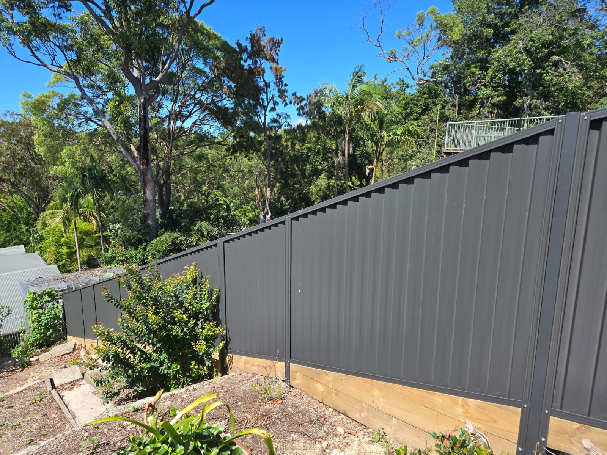
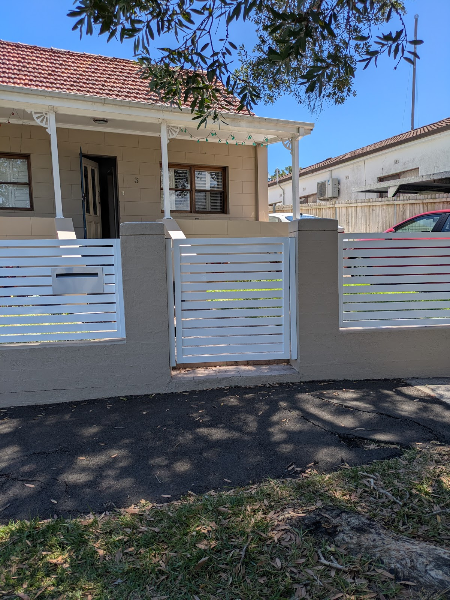
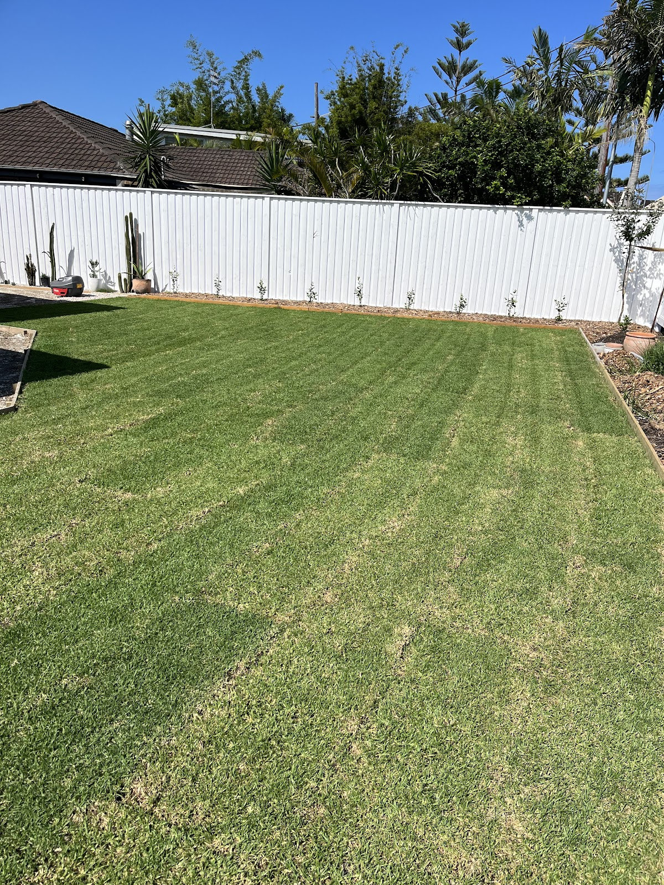
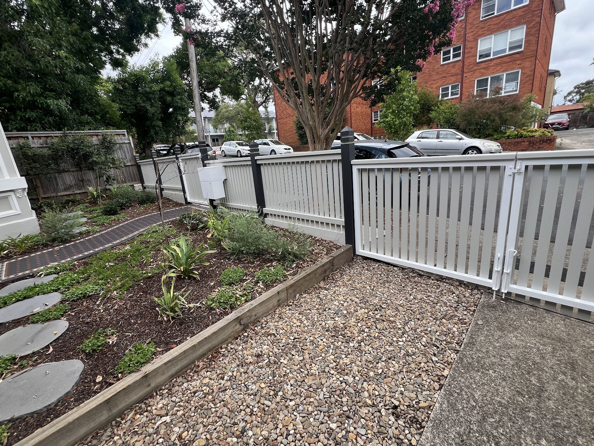
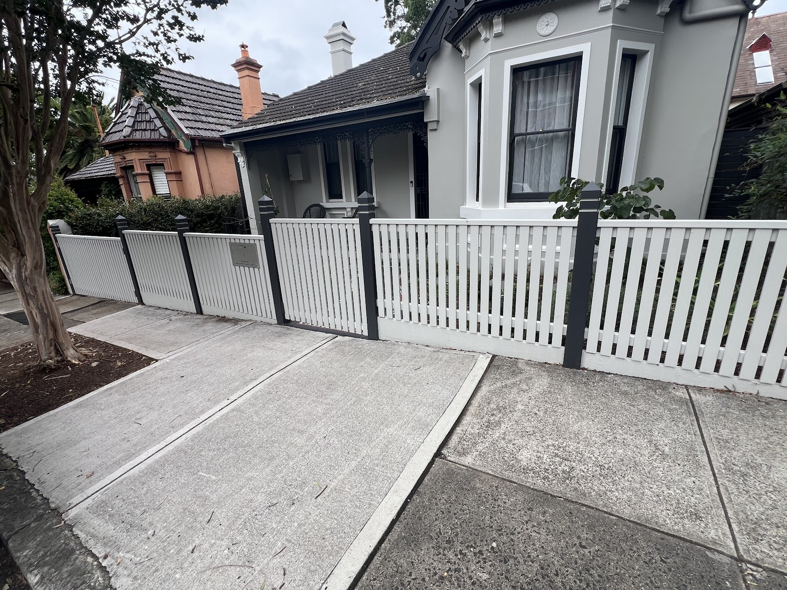
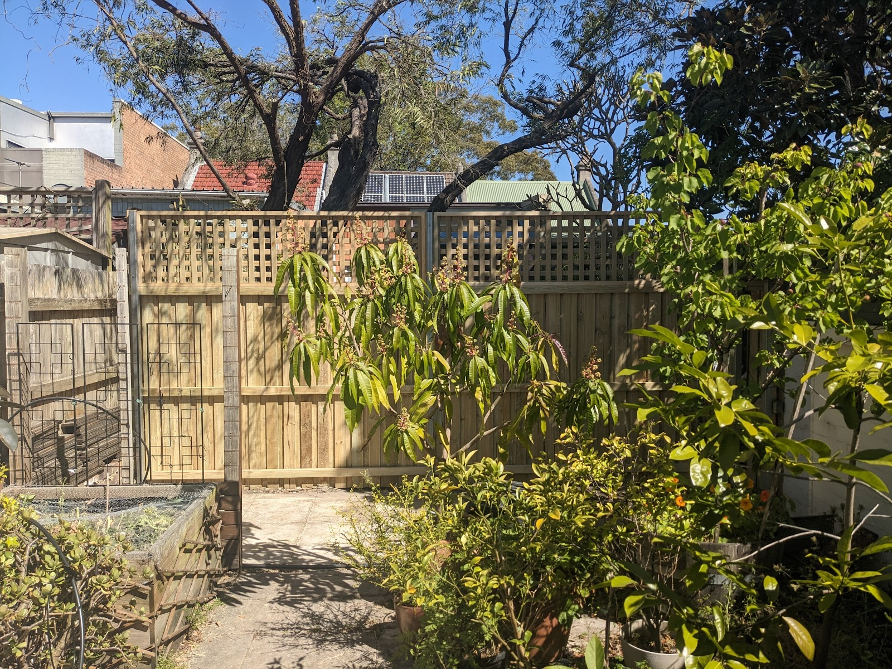

Premium fencing & gates across the inner west — aluminium slat & picket, Colorbond and timber, built dead-straight and finished to the kind of standard people stop to look at.
Real fences and gates across the inner west — aluminium, Colorbond and timber. The proof is in the line.






Sleek horizontal-slat fences and gates — modern, low-maintenance, architectural.
Classic powder-coated picket fencing — crisp, clean and built to stay straight.
Durable steel boundary fencing in a dead-straight run, finished neatly end to end.
Hardwood paling and timber fences — warm, solid and properly set.
Matching gates that hang true and latch right — automation where you need it.
Old fence out, new fence in — we clear the site and take the rubbish with us.
Underwood has built a name across the inner west for one simple thing: lines you'd put a spirit level against. With Max on the tools, clients come back job after job for the attention to detail, the honest advice on what suits the site, and a finish that's clean from the first post to the last.
Hard-working, no fuss, and tidied up before we leave — old fence gone, site swept, gate hung true.
"The timber fences he installed were the straightest I have ever seen, and the side gates were perfect."
"His attention to detail is unmatched — an excellent eye for what works best, adapting to the site to get it right."
"A fantastic job with our aluminium fence — assembled in less than a day, and he disposed of the old one. Very professional."
Call Underwood for a no-nonsense quote — aluminium, Colorbond or timber, gates included. You'll get honest advice on what suits your place and a price with no surprises.